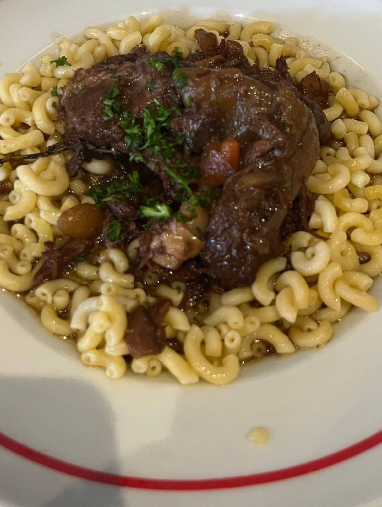

Cuisine française

Cuisine française
Bœuf bourguignon
Préparation : 30 min
Cuisson : 3 h
Ingrédients (pour 6 personnes)
- 1,5 kg de bœuf à braiser (paleron, macreuse, gîte)
- 200 g de lardons
- 1 oignon
- 2 carottes
- 2 gousses d’ail
- 500 g de champignons de Paris
- 75 cl de vin rouge (Bourgogne)
- 2 cuillères à soupe de farine
- 2 cuillères à soupe d’huile
- 40 g de beurre
- 1 bouquet garni (thym, laurier, persil)
- 12 g de sel
- 2 g de poivre
Quantités adaptées. Les temps de cuisson ne sont pas recalculés.
- Couper la viande en gros cubes. Dans une cocotte, faire revenir les lardons avec un peu de beurre, puis les réserver.
- Faire dorer les morceaux de bœuf dans l’huile et le reste de beurre. Ajouter l’oignon émincé, les carottes en rondelles et l’ail haché. Saupoudrer de farine, mélanger et laisser roussir légèrement.
- Verser le vin rouge, ajouter le bouquet garni, saler et poivrer. Remettre les lardons. Couvrir et laisser mijoter à feu doux pendant 2 h 30.
- Nettoyer et émincer les champignons, les faire revenir à la poêle puis les ajouter dans la cocotte 30 minutes avant la fin de la cuisson.
- Rectifier l’assaisonnement. Servir bien chaud, accompagné de pommes de terre vapeur ou de pâtes fraîches.
AstuceUtiliser un vin de qualité pour une sauce savoureuse. Ne pas hésiter à préparer le plat la veille, il n’en sera que meilleur.